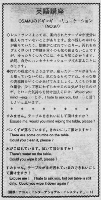

ふいて頂けますか。
Sometimes at the restaurant, Osamu was escorted to a dirty table. There were some crumbs, spilled drinks or spots. He didn't want to complain but he felt uncomfortable. So he just used his own handkerchief or tissue.
レストランによっては案内されたテーブルが充分に整えられていないことがあります。食べ残しのかけらが落ちていたり、飲物がこぼれていたり・・・ 汚れをめざとく見つけて苦情を言うのも気の進まないことですが、ゆったりとくつろぐには、やはり気にかかります。結局、自分のハンカチやティッシューで拭き取ることになります。
汚れの程度にもよりますが、座ったテーブルがきちんと整っていないのは気になるものですね。そんな際の表現例をいくつかあげてみましょう。人にものを頼む場合、わずらわせるのは気がひけるのだが、といった気持ちを付け加えるには、Would you mind ~ing… とか、I hate to ask you, but… というとよいと思います。
すみません。テーブルをきれいにして頂けますか。
Excuse me, would you mind wiping the table, please?
パンくずが落ちています。
There are some crumbs on the table.
きれいにして頂けますか。
Could you clean it, please?
水がこぼれています。
There’s water on the table.
ふいて頂けますか
Could you wipe it off, please.
すみません。テーブルがまだ汚れているので、きれいにして頂けますか。
Excuse me! I hate to ask you, but our table is still dirty.
Could you wipe it down agian?

| © 1995-2013 NACOS International Institute. All Rights Reserved. |